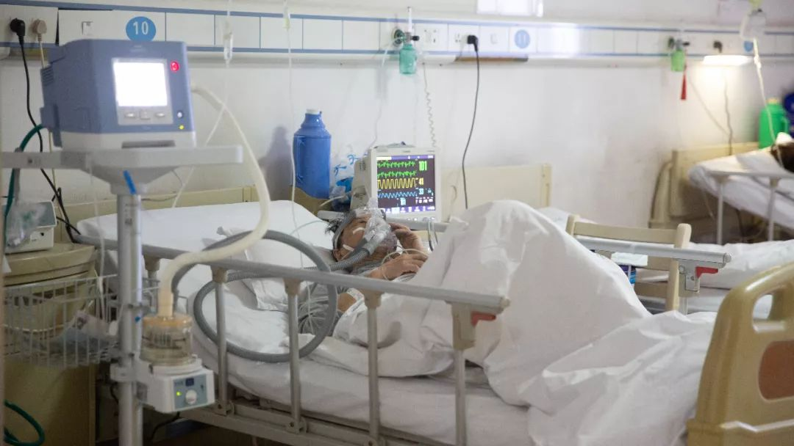
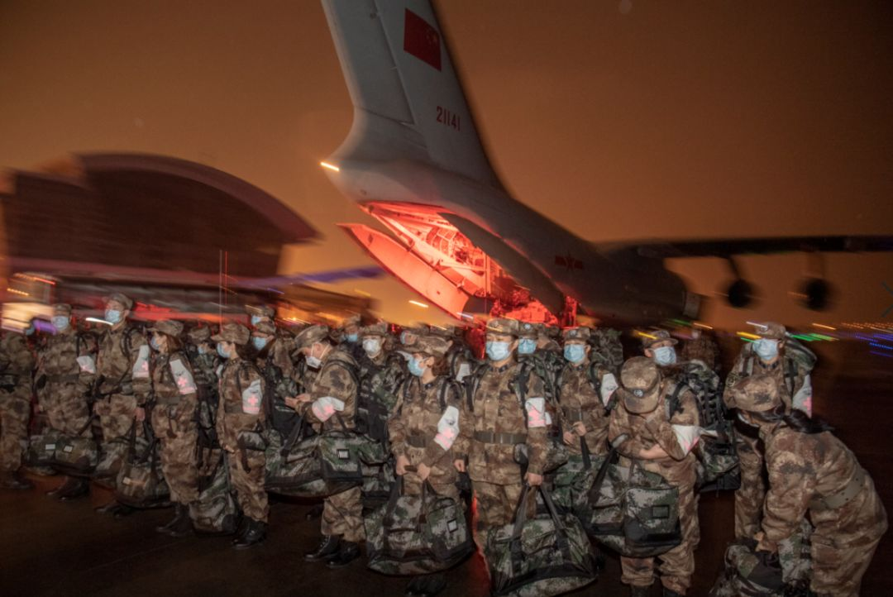
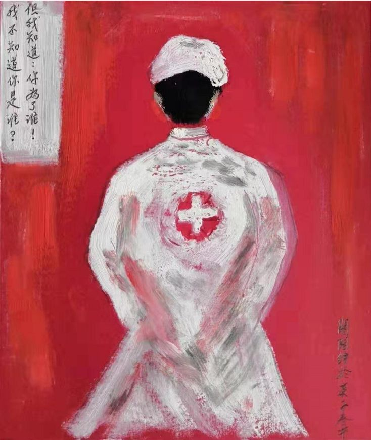

武汉ICU主任万字口述：患者1小时住满一病区，因恐慌到医院排队没必要
原文链接 备份链接 来源 | 潇湘晨报（xxcbwx） “我们这收治了个病患吧，一个人可能感染了好几个人。其中就包括照顾他的医护人员，不是我们医院，是其他医院的。” 口述 | 武汉市肺科医院ICU主任 胡明 采访 | …

陈德昌说，金银潭医院的重症病人情况比较严重。在他工作的病房里，29个病人有16个都上了呼吸机，同时面临物资短缺的难题。当他们作为上海医疗队进驻时，原有医护人员已连续工作近一个月了。这次出征，比想象中要艰苦。
57岁的陈德昌是上海瑞金医院重症医学科主任、中华医学会重症医学分会侯任主任委员。他主动请缨，除夕夜随上海医疗队紧急赶到武汉，奔忙在照顾新型冠状病毒重症患者的一线。上海医疗队支援的第一批医护人员136人，来自上海各大医院，主要分成普通救治队70多人和危重症救治队60多人。

口述 | 陈德昌
记者 | 黄子懿
支援北三区：救治重症病人
我们是1月26日下午正式进驻武汉金银潭医院的，进驻之前经过了一天的防护培训。应该说，金银潭医院的情况还是蛮严重的。
这是武汉专门收治确诊的新型冠状病毒肺炎重症患者的医院，有400多个病人分散在各个病区，重症病人大概130-140个。医院主要分为南区和北区，我们上海医疗队负责整体接手北区二楼和北区三楼的病房，加起来70多个病人。北二楼的病人情况稍微好一点，北三楼全是重症病人。北三区的病房是医院这次专门由普通病房改建的，抢救条件相对简陋一点。
我主要负责情况比较重的北三区。有29个重症病人，有16个都上了呼吸机，属于危重病人，很多人血氧饱和度只有90%-91%（注：正常值为98%）。重症患者中，中老年人会偏多一点，也有30多岁的年轻人。重症病人的特点就是呼吸困难、肺纤维化，有时候氧气也不容易输进去。
我们进去的时候，原来的医护人员都非常疲惫了。他们的工作节奏都特别紧张，强度大，人员少，物资紧缺。这个病区之前只有7-8个医生，40个护士，大家24小时连轴转，工作量是很大很大的。要照顾这么多病人，他们一些人几乎晚上就不回家了，24小时在医院里边，已经有快一个月了，非常累。
另一方面，金银潭还在不停接收新的病人，前两天新开了两个病区。入驻头一天，我下班从病区出来时，救护车正好把病人往里送。所以他们是非常需要支援的。这次国家支援湖北，采取了对口支援的模式。除了我们之外，陆军军医大学也支援金银潭医院，主要负责北区4-6楼。

上海医疗队来支援的第一批医护人员136人，来自上海各大医院。其中医生大概30多人，护士90多人，集中在重症医学、感染科、呼吸科，其他诸如消化、血液等生理学科也有，主要分成普通救治队70多人和危重症救治队60多人。
1月23日小年夜，瑞金医院的领导通知我们，说武汉那边情况紧急，上海要组织医疗队过去支援。因为当时说武汉需要重症方面的专家，我刚好也是做重症医疗的，就马上报了名上去。
我和我爱人都是第二军医大学（海军军医大学）毕业的，军人出身，虽然后来从部队退役转业了，但心里还是有一种军人的责任感。2003年SARS时，我也参与了一些防控，但没有到北京小汤山医院这样的一线去。现在国家有难，挺身而出是天职，国家需要你，你总归要到最需要的地方去。

大年三十上午，院里就打电话给我，说报名卫健委通过了，“你赶快去参加培训！”我就急忙赶去培训，培训大概两个多小时，主要讲了一些新型冠状病毒的防护知识。培训完了后，我问大概什么时候会走？当时得到答复说还没有通知，“估计是要到武汉一个类似的小汤山的新建医院去，可能还要几天时间。”我就回去吃年夜饭去了。
除夕夜的傍晚六点，家里年夜饭刚上桌，电话就来了，说：“今天晚上马上就要走！你赶快赶到医院，到医院领完物资就赶快去机场。”我匆匆地吃了一碗家里的米饭，然后就出门了。
家人还是很支持我的，但也不能说完全没有顾虑，主要就是个人的防护。走之前，爱人反复叮嘱我，“一定要做好防护”。她帮我准备了一些过年的衣服，我当晚把它穿上，当作是护身符。我也准备了很多个人物品，因为我知道，这次可能短时间内回不来。
防护培训：参照埃博拉病毒
上海医疗队大年初一凌晨到的，算比较早的。到达后还不会立马接手，会有一个长达一天的培训，主要是卫健委安排的专家做一些自我防护的相关培训，要做到医护人员零感染。培训的一个重点内容就是如何穿戴防护用品。穿戴是什么顺序？卸装是什么顺序？这是很有讲究的。
金银潭的重症病房被分为了几部分，从防护的角度看就是清洁区、缓冲区和污染区。防护用品的穿戴在清洁状态下问题不大，但卸装就很重要了。你从ICU（重症监护室）里出来，把带病毒的东西卸掉，该用什么顺序？这非常重要，都是被病毒污染的物资，如果顺序不对，很可能会把你暴露。这是很危险的，尤其是到病房去以后，环境突然一变，你一慌张，可能就忘了怎么弄了。

因为工作需要，工作时间必须戴上护目镜，寒冷的冬日里，护目镜上总隔着一层水雾。（高星 摄）
到达后的第一天，我们都在反复练习，一遍一遍地练习穿戴和卸装，这比飞机上练习带氧气面罩复杂得多，光卸装就得10-20分钟，每个步骤都要消毒。像我身材比较魁梧一点，衣服不是很合身，穿和脱都非常困难，不合身就有暴露的风险，需要反复注意。
对于医护人员来说，到重症病房里去看重症患者，按照要求必须得有二级防护；但在ICU有时候要做一些非常危险的操作，比如气管插管这些，还需要做到三级防护。
欣慰的是，我们发现，金银潭的医护人员防护做得非常不错，目前医务人员基本上没有被感染的，他们在这方面特别重视和努力。当然，不是说重症病人的传染性就强，轻症病人也一样传染，只是重症患者可能咳嗽得多，喷出的飞沫比轻症病人多，传染风险稍微大一点。

另一方面比较奇怪的是，金银潭检验科的检验师们从来不接触病人，只是做化验和测试，结果却有4个感染上了。他们是怎么被传染的呢？专家推测，一种可能性是，在进行化验测试等高危操作时，病人的血液样本暴露在空气里形成气溶胶，气溶胶里的携带病毒就传染给这4个检验师了。如果是这样，那这病毒是很厉害的，不接触病人，一点血液在外面，变成气溶胶就有可能被传染。传播途径也因此能分为接触传播、飞沫传播、空气传播，主要传播途径它可能都占。
最后，我们内部参照了陆军军医大学应对埃博拉病毒的防护程序，做了多层保护。我之前在ICU工作时也有防护，但主要是防止耐药菌传播，不是特别严格，因为它没什么传染性。一般就是穿隔离衣、戴口罩和帽子，口罩一般外科口罩就可以了。现在是必须穿防护服了，防护服外面还要穿隔离衣，带护目镜、面罩和口罩，还有两层手套，两层帽子。为了防止感染，有女队员把长发都减掉了。我们只有保护好自己，才能救治更多的重症病人。
“来了就是吃苦的”
因为我们是整体接手，所以花了时间进行工作交接，目前还蛮顺利，金银潭这边留下了一个联络人，负责配合和协调。
这里物资紧缺状况还是超出之前的预料，原本我们以为医院现有物资可以支撑一个星期，但去了之后一了解，金银潭的防护服总共只剩500套，够使用2天。我们带的物资或许能维持一星期，都是应急用的。目前物资还是一天一领，比较短缺，我们已经将需求报了上去，相信后续通过协调能有效解决。
由于北三区的病房是普通病房改造的，所以抢救条件很有限。一般情况下，普通病房是不能做ICU的，正式ICU里的氧源气源都有一定要求，电力系统都有两套，因为涉及到很多设备的使用。比如氧气，现在ICU里的插呼吸机的人有16个，再多可能就负荷不起了，因为病房里氧气会不够用。设备用多了，电力也会跳闸。

我们医生安排是每天6小时一班，夜班是12小时，每5-6天值一次。每天工作这6个小时强度是很大的，要穿着特殊的防护装备在特殊的环境里工作，非常闷，而且病人病情重，但病房条件相对有限，工作会比想象中要艰苦一点。6个小时里不吃不喝，大小便都不行，一穿一脱都是10-20钟。病人多，我们工作量也很大，医护人员要在ICU进进出出。可能我们刚查完房要出来开医嘱，里边病人的病情就有变化，你就又要穿着新的防护服进去，所以每天的物资消耗很大。
刚进来的时候，人手比较紧张。一般ICU里的病人与医生比例是1:0.8，传染病最好是1:1.2，护士要配到1:3、甚至1:3.5，29个病人至少要87个护士。刚进驻的时候北三区只有48名护士，每天要上8个小时班，所以她们非常非常累。在重症病房不宜工作太长时间，每天理想时长是4个小时，时间一长，口罩一湿，就失去了防护作用。冬天冷，这8小时还不能开暖气和空调，冻得双手都冻快麻了，非常辛苦。取暖器也不敢多用，怕ICU里跳闸。
经过协调，北二区病房的团队又分配给我们15名护士，原来8小时一班可能会变成6小时。上海第二批支援医疗队也来了，还有50名护士补充进来，这会大大缓解压力。**但因为物资短缺，我们也不敢加太多的人手，不然消耗量会很大，这也是一个两难。
**

作者：阁阁 《我不知道你是谁？但我知道你为了谁！》
所以，现有的医护人员会比较辛苦一点。不过来了就是吃苦的，不是来享福的，这个我们大家都有心理准备。目前一切都在按部就班进行，包括我们医疗上的规则制度都制定好了，在按流程走，也成立了临时党支部。老党员要放平心态，做好艰苦战斗的准备。
总体来说，目前一些病人的情况在好转。我的病房里有一个30多岁的年轻人，已经在里面治疗两个礼拜了，呼吸困难，喘气非常吃力，上了呼吸机。接手第一天晚上我一看，他的血氧饱和度只有90%左右，我当时想，“居然这么重，可能会比较棘手”。当天晚上我们医护人员值班，第二天我去看，血氧饱和度上升到93%，他自己也说感觉好了一点；还有一个40-50岁的病人，有谵妄，有时候会有妄想，情绪非常不稳定。我们给了做思想工作，用了药，目前看他的情况也能慢慢稳定。
我们也收了第一个新病人，来的时候，病人情况很危急，血氧饱和度最低只有40％，经过全力抢救，现在病人血氧饱和度上升到了98%，人也清醒过来了。总之，病人还在源源不断地送过来，我们也没有想过什么时候能回去，现在正是需要鼓舞士气的时候。
作者档案

**黄子懿
**
做好打持久战的准备
26分钟前


三联生活周刊
个人微博：@杰货
⊙文章版权归《三联生活周刊》所有，欢迎转发到朋友圈，转载开白请联系后台。未经同意，严禁转载至网站、APP等。
黄子懿
微信扫一扫赞赏作者 赞赏
长按二维码向我转账
受苹果公司新规定影响，微信 iOS 版的赞赏功能被关闭，可通过二维码转账支持公众号。
原文链接 备份链接 来源 | 潇湘晨报（xxcbwx） “我们这收治了个病患吧，一个人可能感染了好几个人。其中就包括照顾他的医护人员，不是我们医院，是其他医院的。” 口述 | 武汉市肺科医院ICU主任 胡明 采访 | …
原文链接 备份链接 【财新网】（记者 高昱） 感染科医生的除夕 先戴口罩，然后是帽子，接着穿白色的清洁工作服，也就是医生护士们每天穿的白大褂。领子要竖起来，尽可能遮住脖子。 最重要的是第四步，穿连体防护服。非织造布的防护服经过了复膜处理， …
原文链接 备份链接 1月28日下午三时，中国青年报·中国青年网记者实地探访武汉市第五医院输液室。 本文约4534字 预计阅读时间12分钟 中青报·中青网记者 王嘉兴 这是一位坚守在抗击新型肺炎一线医生的自述。她经历了疫情初期所在医院的 …
原文链接 备份链接 支援武汉的医护人员已上千，地方900多人，军队450人，随后将再派1600多人。 武汉医护人员身心俱疲，难以应对不断增长的病例和民众的恐慌。 外援的到来，缓解了他们的负担。不少援汉医护人员感到，仅从肺炎诊治难度而 …
原文链接 备份链接 采写/胡琪琛 编辑/刘汨 隔离病房贴上了福字 | 长江日报 22岁的黎平安是武汉一家三级医院的医生，在市内公共交通停止运行后，大年三十那天，他走了一个多小时去医院上班。 在黎平安工作的医院，同样面临着物资匮乏的情 …